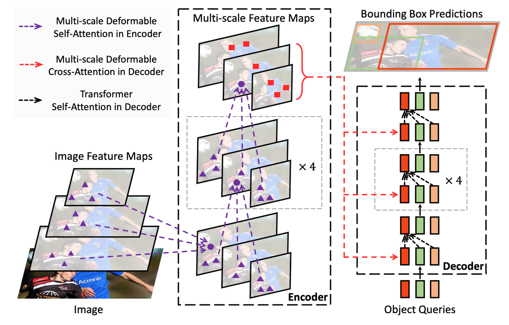
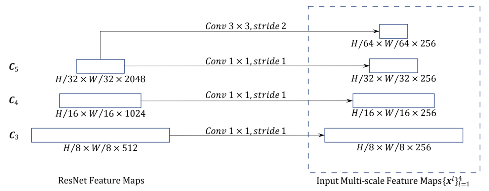
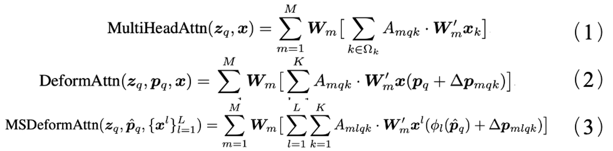
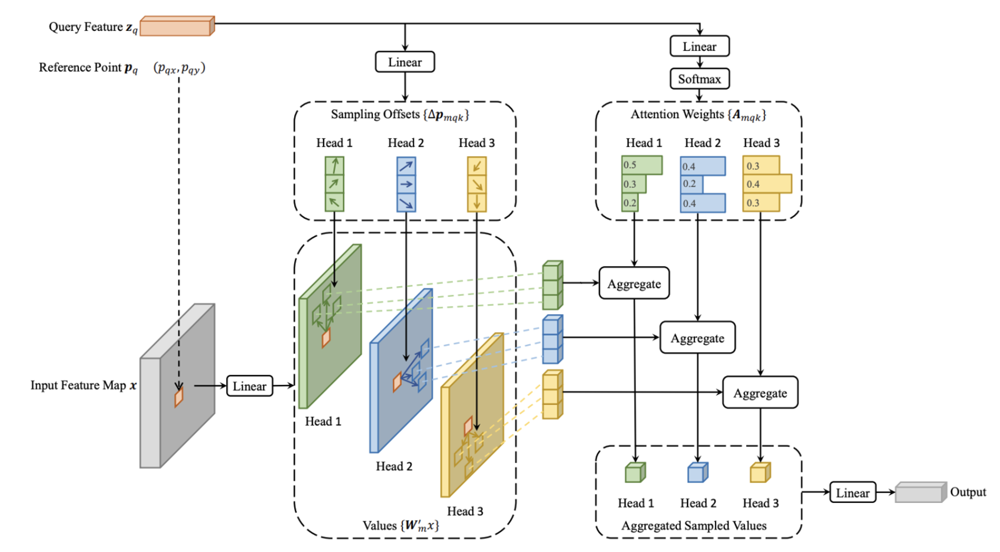
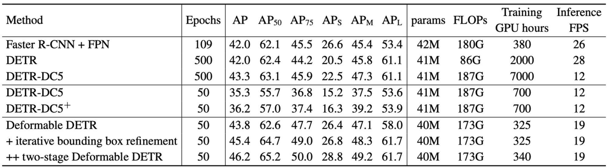
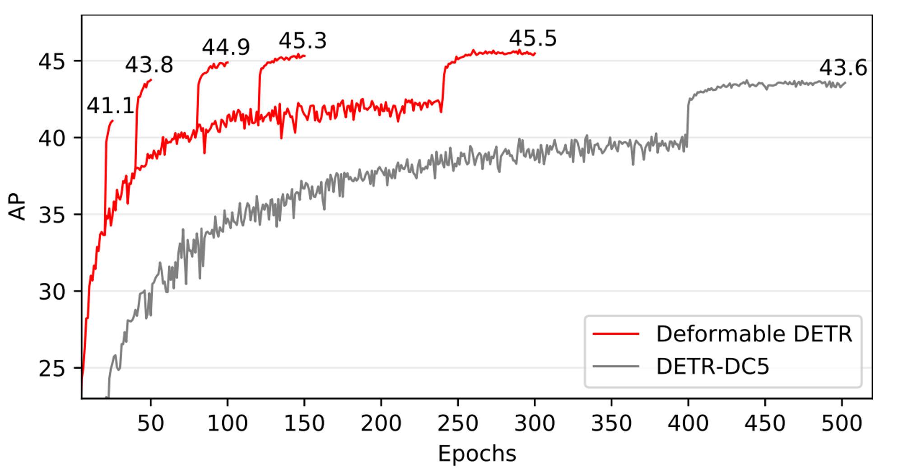
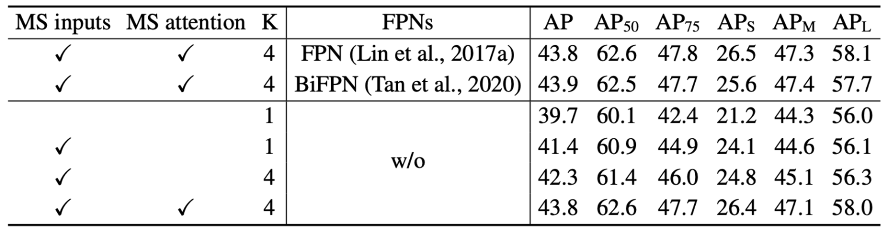
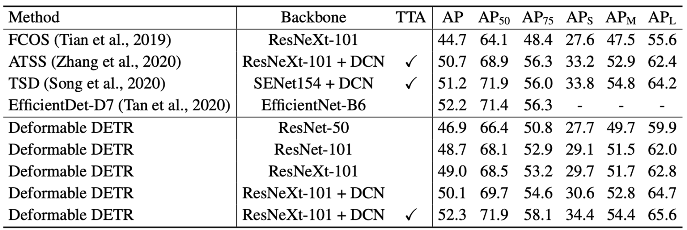

Deformable DETR: Deformable Transformers for End-to-End Object Detection
论文：Deformable DETR: Deformable Transformers for End-to-End Object Detection
作者：Xizhou Zhu, Weijie Su, Lewei Lu, Bin Li, Xiaogang Wang, Jifeng Dai
发表：ICLR 2021
由于Transformer模块在处理图像特征图时的局限性，DETR存在收敛速度慢和特征空间分辨率有限的问题。Deformable DETR提出了deformable attention机制——每个特征像素不必与所有特征像素交互计算，只需要与部分基于采样获得的其它像素交互，并且这些采样点的位置是可学习的。这是一种局部(local)和稀疏(sparse)的高效注意力机制，能够解决DETR收敛慢与能够处理的特征分辨率受限的问题。
研究背景
DETR 提出了Query Based的端到端目标检测算法，把目标检测看成了一个集合预测的问题，巧妙避开目标检测中常用的Anchor和NMS的方法，具有实现简单、拓展性强的优点。但同时DETR也存在一些问题：
- 训练周期长，相比faster rcnn慢10-20倍。
- 对小目标不友好。
针对DETR所存在的上述两个问题，分析其原因如下：
- Transformer最大的问题在初始化时对于特征图上每个像素的权重几乎都是一样的，而且都非常小，这导致很长的训练周期。实际上只需要关注少数有意义的点即可。
- 小目标的识别效果很差。Transformer在计算注意力权重时，伴随着高计算量与空间复杂度。如果提高特征图的分辨率会使计算复杂度呈平方倍上升。
本文工作
Deformable DETR改进如下：
- 采用Deformable Attention，将可变形卷积与Transformer结合，使得注意力机制在小范围中采样，只考虑最有价值的几个点，以降低计算量，加快收敛速度。
- 采用多尺度Deformable Attention。在多尺度特征图上做Deformable Attention，在提高对小目标检测效率的同时，有效控制了参数数量。
Deformable DETR的核心思想：
它的注意模块只关注一个目标周围的一小部分关键采样点。Deformable DETR可以获得比DETR更好的性能，( 特别是在小物体上 ) ，并且训练时间少10×。
方法
Deformable DETR的整体架构还是与DETR的整体架构是相同的：
- 提取特征
- 然后经过encoder、decoder
- 最后是分类头得到相应的结果。
Deformable DETR的主要贡献：
- Multi-Scale Features & Scale-Level Embedding
- Deformable Attention(& Multi-Scale)
Deformable Transformer

Multi-Scale Features & Scale-Level Embedding是在backbone部分提取了不同层级的特征，总共有4层：
- C3~C5 来自ResNet，下采样率对应为8、16、32
- C6由C5经过步长为2的3x3卷积得到

Deformable Attention(& Multi-Scale) ：
- query不是和全局每个像素点位置的 key 都计算注意力权重，而是对于每个 query 仅与采样点位置的 key 做计算，并且value 也是基于这些位置进行采样插值得到的，最后将这个局部&稀疏的注意力权重施加在对应的value上。 Deformable Attention与传统Attention的计算公式对比如公式（1）-（3）所示。
- 不需要像Transformer 先从全局位置开始学习再逐渐过渡到局部的、真正有意义的位置。


Deformable Transformer
这里的 Transformer 和 DETR 中的大体过程一致，最主要的区别是：
- Deformable attention 替代了 Encoder 中的 self-attention
- Decoder中的交叉注意力 cross-attention 的deformable cross-attention
实验
Dataset：COCO2017
对比实验
与DETR 和 Sparse R-CNN (稀疏交互机制 & No RPN & No NMS) 做对比实验
以下列出了仅出现在 Deformable DETR 中而没出现在 DETR / Sparse R-CNN：
i). vs DETR
多尺度特征；
新增scale-level embedding，用于区分不同特征层
使用了multi-scale deformable attention替代Encoder中的自注意力和Decoder中的cross-attention；
引入了参考点，某种程度上起到先验的作用；
为自己开发了“高配”版：iterative bounding box refinement 和 两阶段模式；
检测头部的回归分支预测的是边界框偏移量而非绝对坐标值
ii). vs Sparse R-CNN
没有使用FPN；
使用了位置嵌入；
2-stage时，proposals是predicted的（而非Sparse R-CNN直接使用learnable embedding）；
使用了Transformer；
注意力机制是one-to-many iteraction，Sparse R-CNN是彻底的sparse，是one-to-one实例级别的交互；
检测头部的回归分支预测的是bbox偏移量而非绝对坐标值。
与DETR 和 Sparse R-CNN (稀疏交互机制 & No RPN & No NMS) 做对比实验
- 与 Faster R-CNN FPN 相比，DETR 需要更多的训练时间才能收敛，而且在检测小物体方面性能较差。与 DETR 相比，Deformable DETR 在减少 10 倍训练时间的情况下取得了更好的性能（尤其是在小物体上）。
- Deformable DETR 与 Faster R-CNN + FPN 和 DETR-DC5 的 FLOPs 相当。但运行速度比 DETR-DC5 快得多（1.6 倍），只比 Faster R-CNN + FPN 慢 25%。
下图是Deformable DETR 与 DETR 在 COCO 2017 val set的对比实验结果. DETR-DC5+ 代表DETR-DC5 with Focal Loss and 300 object queries。

下图是Deformable DETR和DETR-DC5在COCO 2017 val set的收敛曲线

消融实验
消融实验对以下方面进行了验证：
- 使用多尺度输入而不是单尺度输入可以有效提高检测精度，AP 为 1.7%，尤其是在检测小物体时，APS 为 2.9%。
- 增加采样点 K 可以进一步提高 0.9% 的 AP。
- 使用多尺度可变形关注，允许在不同尺度级别之间交换信息，可以使 AP 提高 1.5%。
- 由于已经采用了跨尺度特征交换，因此添加 FPN 不会提高性能。
- 当不使用多尺度注意力且 K = 1 时，（多尺度）可变形注意力模块会退化为可变形卷积，从而明显降低精度。
以下是deformable attention在COCO 2017 val set上的一些消融实验结果：

与STATE-OF-THE-ART METHODS的对比实验
本文方法的设定以及与STATE-OF-THE-ART METHODS的对比实验结果：
- 表中本文的模型均采用了iterative bounding box refinement 和两阶段机制。
- 使用 ResNet-101 和 ResNeXt-101，本文的方法在不增加任何额外功能的情况下分别实现了 48.7 AP 和 49.0 AP。
- 通过使用带有 DCN 的 ResNeXt-101，准确率上升到 50.1 AP。
- 通过额外的测试时间增强，所提出的方法达到了 52.3 AP。

分析与思考
Deformable DETR实例显著性点所存在的问题：
- 采样点相关度高和相关度低的点集中在图像相同区域，没有明显界限
- 采样点的相关性分布比较混乱，不利于对实例关注度的解释
- 参考点以及采样点的分布效果不稳定
✉️ yang-yi@zju.edu.cn